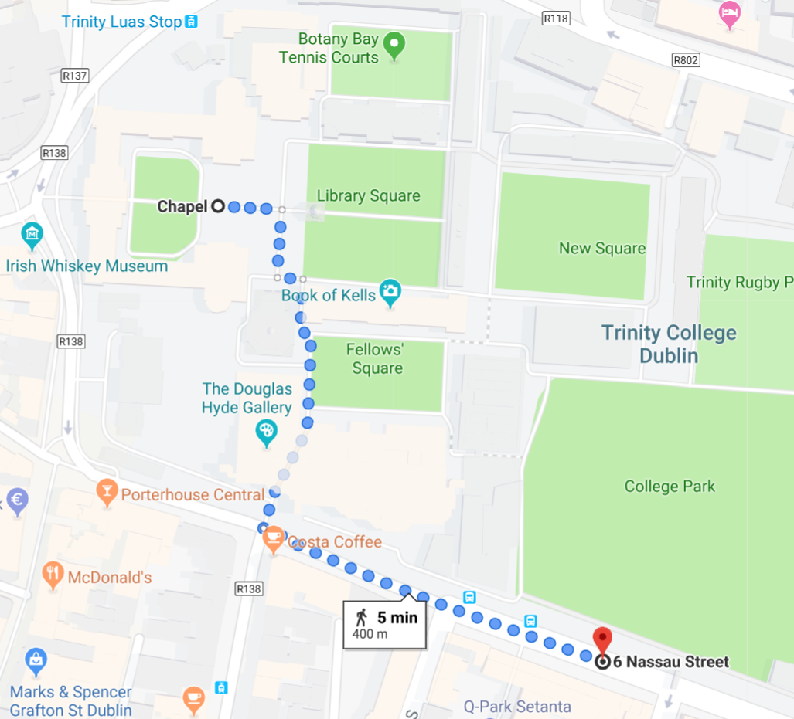

and 's Wedding
27th April 2019
We will have a ceremony at the Trinity College Chapel at 2pm followed by a reception dinner at the Fitzpatrick Castle Hotel, Killiney. Here is the full itinerary.
Bus from Trinity to the Fitzpatrick Castle Hotel
We are organising a bus to go from Trinity to the reception for those who aren't driving. The bus will leave at 15:30 on Nassau Street across the street from the Kilkenny Shop. Please see the map below for walking directions:
Further Information
Detailed ItineraryDress Code
Transport
Accommodation
Things To Do, Eat and Drink in Dublin
Chapel and Castle History.